Last updated: 2026-06-11
Checks: 7 0
Knit directory:
Matters_Arising_Shimizu_etal/
This reproducible R Markdown analysis was created with workflowr (version 1.7.1). The Checks tab describes the reproducibility checks that were applied when the results were created. The Past versions tab lists the development history.
Great! Since the R Markdown file has been committed to the Git repository, you know the exact version of the code that produced these results.
Great job! The global environment was empty. Objects defined in the global environment can affect the analysis in your R Markdown file in unknown ways. For reproduciblity it’s best to always run the code in an empty environment.
The command set.seed(20260420) was run prior to running
the code in the R Markdown file. Setting a seed ensures that any results
that rely on randomness, e.g. subsampling or permutations, are
reproducible.
Great job! Recording the operating system, R version, and package versions is critical for reproducibility.
Nice! There were no cached chunks for this analysis, so you can be confident that you successfully produced the results during this run.
Great job! Using relative paths to the files within your workflowr project makes it easier to run your code on other machines.
Great! You are using Git for version control. Tracking code development and connecting the code version to the results is critical for reproducibility.
The results in this page were generated with repository version 856436e. See the Past versions tab to see a history of the changes made to the R Markdown and HTML files.
Note that you need to be careful to ensure that all relevant files for
the analysis have been committed to Git prior to generating the results
(you can use wflow_publish or
wflow_git_commit). workflowr only checks the R Markdown
file, but you know if there are other scripts or data files that it
depends on. Below is the status of the Git repository when the results
were generated:
Ignored files:
Ignored: .DS_Store
Ignored: .Rhistory
Ignored: .Rproj.user/
Ignored: analysis/not_tracked/
Ignored: output/.DS_Store
Ignored: output/data/
Ignored: output/figures/.DS_Store
Ignored: renv/
Unstaged changes:
Modified: analysis/MakeFigures.Rmd
Note that any generated files, e.g. HTML, png, CSS, etc., are not included in this status report because it is ok for generated content to have uncommitted changes.
These are the previous versions of the repository in which changes were
made to the R Markdown
(analysis/Silva_28dpf_makeObject_Level_01_AllCells_Level_02_ImmuneCells.Rmd)
and HTML
(docs/Silva_28dpf_makeObject_Level_01_AllCells_Level_02_ImmuneCells.html)
files. If you’ve configured a remote Git repository (see
?wflow_git_remote), click on the hyperlinks in the table
below to view the files as they were in that past version.
| File | Version | Author | Date | Message |
|---|---|---|---|---|
| Rmd | 856436e | Michelle Meier | 2026-06-11 | wflow_publish("analysis/Silva_28dpf_makeObject_Level_01_AllCells_Level_02_ImmuneCells.Rmd") |
| html | 40c8336 | Michelle Meier | 2026-06-01 | Build site. |
| Rmd | 74fdba8 | Michelle Meier | 2026-06-01 | wflow_publish("analysis/Silva_28dpf_makeObject_Level_01_AllCells_Level_02_ImmuneCells.Rmd") |
The purpose of this analysis is to analyse a dataset that is specifically enriched for mpeg1.1+ cells in the zebrafish brain. Our lab is mostly interested in endothlial cells, so we tend to sort for them. Getting publicly available data from this paper where they sequence 2 juvenile and 1 adult zebrafish immune cells in the brain (CD45+ mpeg1.1+ FACS).
I have download their filtered data they deposited on GEO (GSE164772).
suppressPackageStartupMessages({
library(here)
library(scran)
library(scater)
library(scuttle)
library(scales)
library(readr)
library(Seurat)
library(ggpubr)
library(tidyverse)
library(qs2)
library(patchwork)
# library(DropletUtils)
})Warning: package 'scran' was built under R version 4.5.3Warning: package 'SingleCellExperiment' was built under R version 4.5.1Warning: package 'SummarizedExperiment' was built under R version 4.5.1Warning: package 'MatrixGenerics' was built under R version 4.5.1Warning: package 'GenomicRanges' was built under R version 4.5.2Warning: package 'BiocGenerics' was built under R version 4.5.1Warning: package 'S4Vectors' was built under R version 4.5.3Warning: package 'IRanges' was built under R version 4.5.1Warning: package 'Seqinfo' was built under R version 4.5.1Warning: package 'Biobase' was built under R version 4.5.1Warning: package 'scuttle' was built under R version 4.5.1silva_path <- here("data/GeneralCellrangerOutputs/Silva2021/GSE164772_sc_dr_Silva2021Counts.txt.gz")
silva_meta_path <- here("data/GeneralCellrangerOutputs/Silva2021/GSE164772_sc_dr_Silva2021_metadata.csv.gz")plot_sizing <- theme_bw()+ theme(axis.title = element_text(size = 16),
axis.text = element_text(size = 14, colour = "black"),
plot.title = element_text(size = 18),
legend.text = element_text(size = 14),
legend.title = element_blank())
plot_sizing_seurat <- theme(axis.title = element_text(size = 16),
axis.text = element_text(size = 14, colour = "black"),
plot.title = element_text(size = 18),
legend.text = element_text(size = 14))
rotate_x <- theme(axis.text.x = element_text(angle = 90, vjust = 0.5, hjust=1))
strip_fix <- theme(strip.background = element_rect(fill = "white"),
strip.text = element_text(size = 14))Taking their filtered data, no need for QC filtering.
counts <- read.table(silva_path )
meta <- read_csv(silva_meta_path, show_col_types = F) %>%
column_to_rownames("...1")New names:
• `` -> `...1`Level_01_seuratObject <- CreateSeuratObject(
counts=counts,
meta.data = meta,
min.cells = 1)Warning: Data is of class data.frame. Coercing to dgCMatrix.Level_01_seuratObjectAn object of class Seurat
22468 features across 9043 samples within 1 assay
Active assay: RNA (22468 features, 0 variable features)
1 layer present: countsAdd % mito
Level_01_seuratObject$`percent.mt` <- PercentageFeatureSet(Level_01_seuratObject, pattern = "^[mtMtMT-]")make_density_plots <- function(seurat =Level_01_seuratObject, sample){
plot_list <- list()
#ncount
p1 <- ggplot(seurat@meta.data %>% filter(., individual == sample), aes(x=log10(nCount_RNA))) +
geom_histogram(aes(y=..density..), colour="black", fill="white")+
geom_density(alpha=.2, fill="#FF6666")+ xlab('log10(count)') +
plot_sizing + ggtitle(sprintf("Library size, %s", sample))
#nfeat
p2 <- ggplot(seurat@meta.data %>% filter(., individual == sample), aes(x=log10(nFeature_RNA))) +
geom_histogram(aes(y=..density..), colour="black", fill="white")+
geom_density(alpha=.2, fill="#FF6666")+ xlab('log10(nfeature)') +
plot_sizing + ggtitle(sprintf("#features, %s", sample))
#mito
p3 <- ggplot(seurat@meta.data %>% filter(., individual == sample), aes(x=percent.mt)) +
geom_histogram(aes(y=..density..), colour="black", fill="white")+
geom_density(alpha=.2, fill="#FF6666")+ xlab('percent.mt') +
plot_sizing + ggtitle(sprintf("mito, %s", sample))
return(p1+p2+p3)
}
make_correlation_plots <- function(seurat =Level_01_seuratObject, sample){
plot_list <- list()
meta <- seurat@meta.data %>%
filter(., individual == sample) %>%
mutate(., log10ncount = log10(nCount_RNA),
log10nfeat = log10(nFeature_RNA))
#ncount
p1 <- ggscatter(meta, x = "log10ncount", y = "log10nfeat",
add = "reg.line",
conf.int = TRUE,
add.params = list(color = "red4",
fill = "lightgray")) +
plot_sizing + ylab("log10(#features)") + xlab("log10(nCount)") +
stat_cor(method = "pearson", label.x = 3, label.y = 4, size = 5) +
ggtitle(sprintf("Lib size vs #features, %s", sample))
#nfeat
p2 <- ggscatter(meta, x = "log10ncount", y = "percent.mt",
add = "reg.line",
conf.int = TRUE,
add.params = list(color = "red4",
fill = "lightgray")) +
plot_sizing + ylab("%mito") + xlab("log10(nCount)") +
stat_cor(method = "pearson", label.x = 3, label.y = 80, size = 5) +
ggtitle(sprintf("Lib size vs mito, %s", sample))
#mito
p3 <- ggscatter(meta, x = "log10nfeat", y = "percent.mt",
add = "reg.line",
conf.int = TRUE,
add.params = list(color = "red4",
fill = "lightgray")) +
plot_sizing + ylab("%mito") + xlab("log10(#features)") +
stat_cor(method = "pearson", label.x = 2.6, label.y = 80, size = 5) +
ggtitle(sprintf("#features vs mito, %s", sample))
return(p1+p2+p3)
}plot_list <- lapply(Level_01_seuratObject$individual %>% unique(), function(S) make_density_plots(sample=S))
wrap_plots(plot_list, ncol=1) + plot_layout(axis_titles = "collect")`stat_bin()` using `bins = 30`. Pick better value `binwidth`.
`stat_bin()` using `bins = 30`. Pick better value `binwidth`.
`stat_bin()` using `bins = 30`. Pick better value `binwidth`.
`stat_bin()` using `bins = 30`. Pick better value `binwidth`.
`stat_bin()` using `bins = 30`. Pick better value `binwidth`.
`stat_bin()` using `bins = 30`. Pick better value `binwidth`.
`stat_bin()` using `bins = 30`. Pick better value `binwidth`.
`stat_bin()` using `bins = 30`. Pick better value `binwidth`.
`stat_bin()` using `bins = 30`. Pick better value `binwidth`.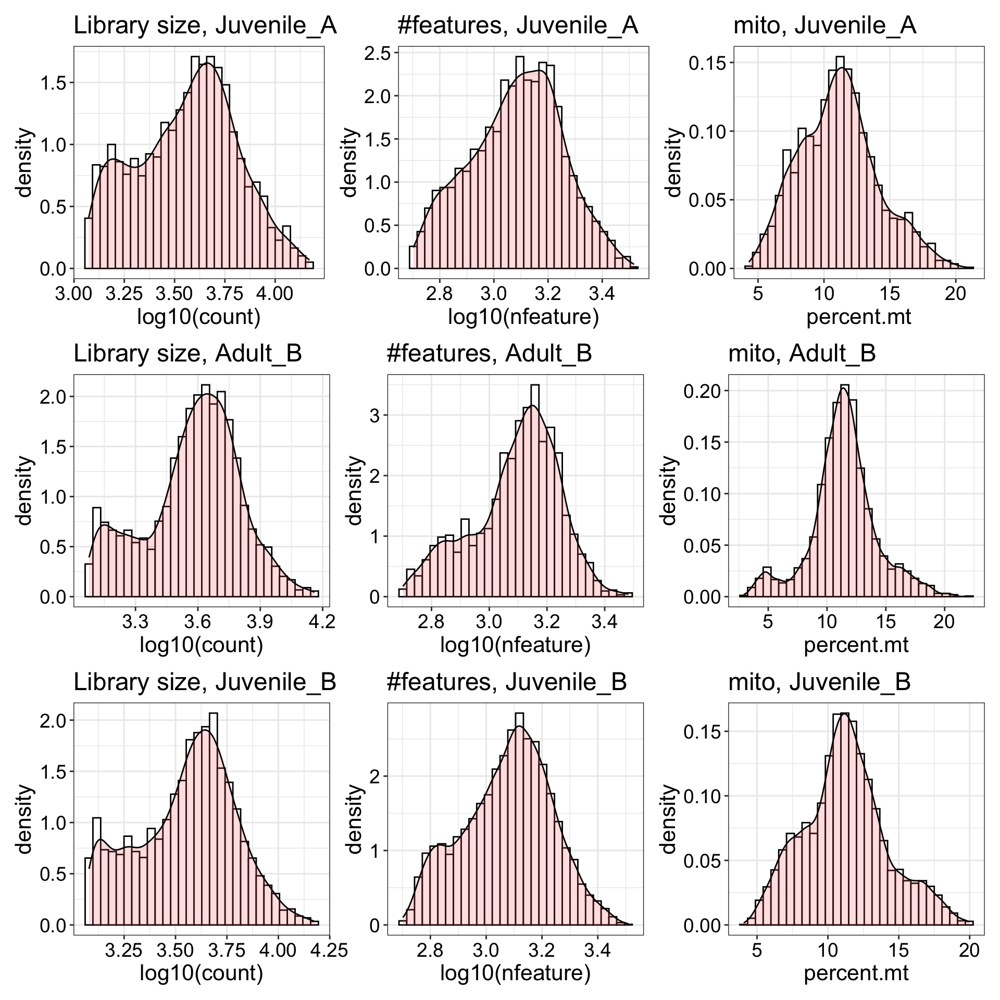
| Version | Author | Date |
|---|---|---|
| 40c8336 | Michelle Meier | 2026-06-01 |
plot_list <- lapply(Level_01_seuratObject$individual %>% unique(), function(S) make_correlation_plots(sample=S))
wrap_plots(plot_list, ncol=1) + plot_layout(axis_titles = "collect")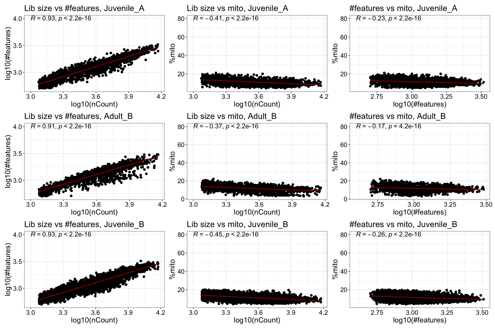
| Version | Author | Date |
|---|---|---|
| 40c8336 | Michelle Meier | 2026-06-01 |
Only looking at juvenile samples
cells_to_keep <- Level_01_seuratObject@meta.data %>%
filter(.,age=="Juvenile") %>%
rownames()
juvenile_only <- subset(Level_01_seuratObject, cells = cells_to_keep)Using what they provide in the methods setion of their paper. Though skipping regressing out for now.
juvenile_only <- NormalizeData(object = juvenile_only, scale.factor = 10000, verbose=F) %>%
FindVariableFeatures(., nfeatures = 6000, verbose=F) %>%
ScaleData(., vars.to.regress = "nFeature_RNA", verbose=F) %>%
RunPCA(., verbose=F) %>%
FindNeighbors(., dims = 1:30, verbose=F) %>%
FindClusters(., resolution = seq(0.1,1,0.1), verbose=F) %>%
RunUMAP(., dims = 1:30, verbose=F)Warning: The default method for RunUMAP has changed from calling Python UMAP via reticulate to the R-native UWOT using the cosine metric
To use Python UMAP via reticulate, set umap.method to 'umap-learn' and metric to 'correlation'
This message will be shown once per sessionThe Jclusters/JMclusters are their clusters!
p1 <- DimPlot(object = juvenile_only, group.by = "individual", shuffle = T)
p2 <- FeaturePlot(object = juvenile_only, feature = "nCount_RNA")
p3 <- FeaturePlot(object = juvenile_only, feature = "nFeature_RNA")
p4 <- FeaturePlot(object = juvenile_only, feature = "percent.mt")
p5 <- FeaturePlot(object = juvenile_only, feature = "mpeg1.1")
p6 <- DimPlot(object = juvenile_only, group.by = "Jclusters", shuffle = T, label = T) + theme(legend.position = "none")
p7 <- DimPlot(object = juvenile_only, group.by = "JMclusters", shuffle = T, label = T) + theme(legend.position = "none")
p1+p2+p3+p4+p5+p6+p7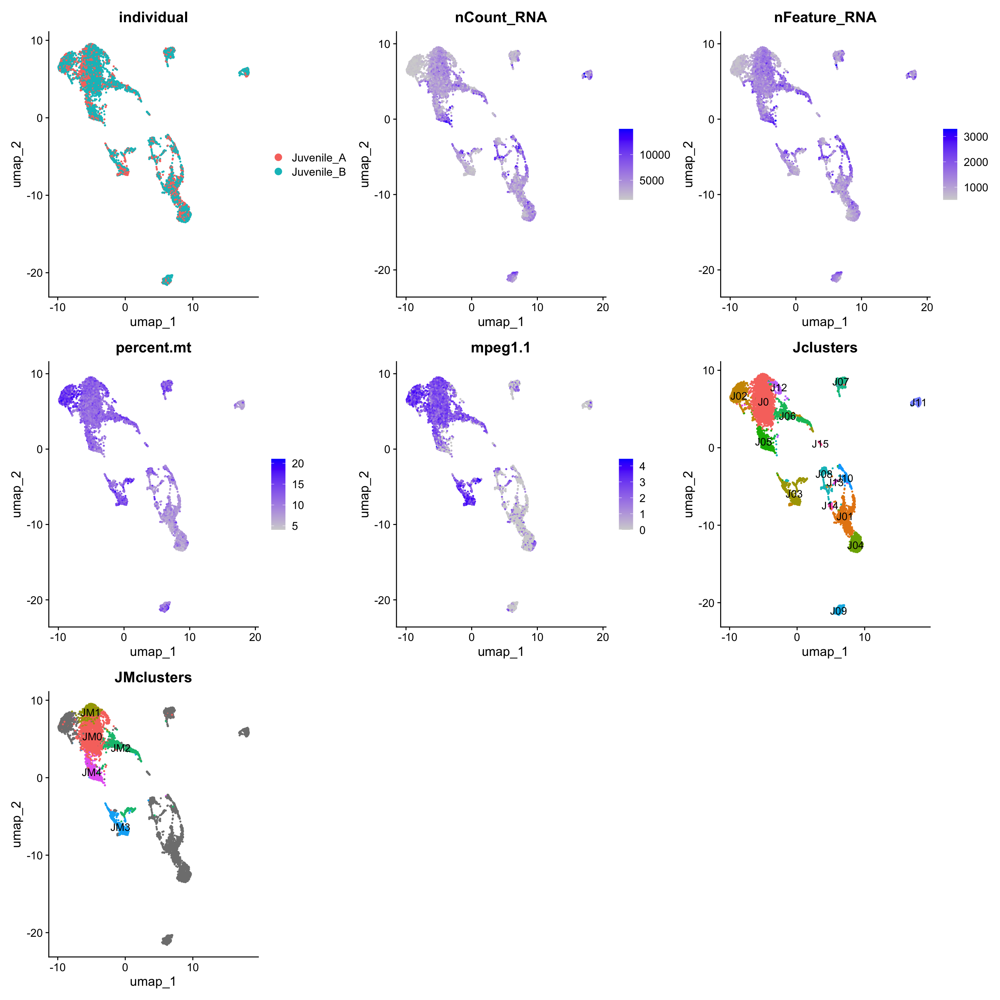
| Version | Author | Date |
|---|---|---|
| 40c8336 | Michelle Meier | 2026-06-01 |
Looks like they did not subset J02 - maybe due to QC concerns?
Add QC metrics boxplots.
plot_list <- list()
plot_list[[1]] <- juvenile_only@meta.data %>%
ggplot(., aes(y = log10(nCount_RNA), x = Jclusters, fill=Jclusters)) +
geom_boxplot() +
plot_sizing + theme(legend.position = "none") + ggtitle("Library size")
plot_list[[2]] <- juvenile_only@meta.data %>%
ggplot(., aes(y = log10(nFeature_RNA), x = Jclusters, fill=Jclusters)) +
geom_boxplot() +
plot_sizing + theme(legend.position = "none") + ggtitle("#genes")
plot_list[[3]] <- juvenile_only@meta.data %>%
ggplot(., aes(y = percent.mt, x = Jclusters, fill=Jclusters)) +
geom_boxplot() +
plot_sizing + theme(legend.position = "none") + ggtitle("%mito")
wrap_plots(plot_list, axes = "collect", ncol=2)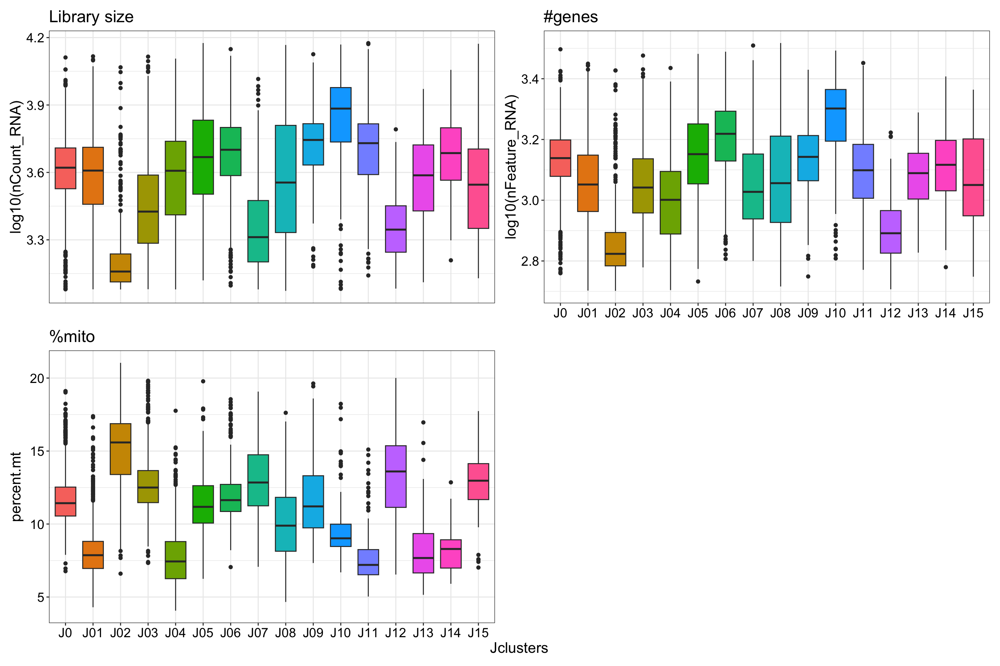
| Version | Author | Date |
|---|---|---|
| 40c8336 | Michelle Meier | 2026-06-01 |
J02 is likely low quality cells.
Make immune cells dotplot.
genes_immune_annotation <- c("pcna", "mki67", "top2a", #prolif
"apoc1", "apoeb", "slco2b1", "sall3a", "p2ry12", "tgfbr1b", "slc2a5", #MG
"mpeg1.1","csf1ra", "csf1rb", #shared MG + CAM
"c1qa", "cybb", "marco", "f13a1b", "anxa5b", "nampta", "pla2g7", "tgfb1", "lyve1b", #CAM
"xcr1a.1", "flt3", "batf3", #DC
"cd79a", "cd79b", "pax5", #Bcell
"gzm3.3", "il2rb", "ccl38.6", #NK
"zap70", "lck", "il7r", #Tcell
"tbx21", "runx3", #ILC1
"il4", "gata3", "il13" #ILC2
)DotPlot(object = juvenile_only, features = genes_immune_annotation, group.by = "Jclusters") + rotate_xWarning: The following requested variables were not found: tgfb1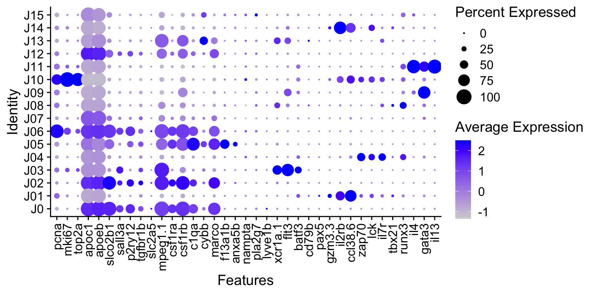
| Version | Author | Date |
|---|---|---|
| 40c8336 | Michelle Meier | 2026-06-01 |
juvenile_only$celltype <- case_when(juvenile_only$Jclusters %in% c("J0", "J12") ~ "MG",
juvenile_only$Jclusters == "J05" ~ "CAM",
juvenile_only$Jclusters == "J06" ~ "prolif MG",
juvenile_only$Jclusters %in% c("J01", "J14") ~ "NK cells",
juvenile_only$Jclusters == "J04" ~ "T cells" ,
juvenile_only$Jclusters == "J03" ~ "DC" ,
juvenile_only$Jclusters == "J10" ~ "prolif immune",
juvenile_only$Jclusters == "J08" ~ "ILC1",
juvenile_only$Jclusters == "J11" ~ "ILC2",
juvenile_only$Jclusters == "J02" ~ "low quality",
juvenile_only$Jclusters %in% c("J07", "J09", "J13", "J15") ~ "unknown")
juvenile_only$celltype <- factor(juvenile_only$celltype, levels = rev(c("prolif MG", "MG", "CAM", "prolif immune","DC", "NK cells", "T cells", "ILC1", "ILC2","low quality", "unknown")))Remake dotplot
DotPlot(object = juvenile_only, features = genes_immune_annotation, group.by = "celltype") + rotate_xWarning: The following requested variables were not found: tgfb1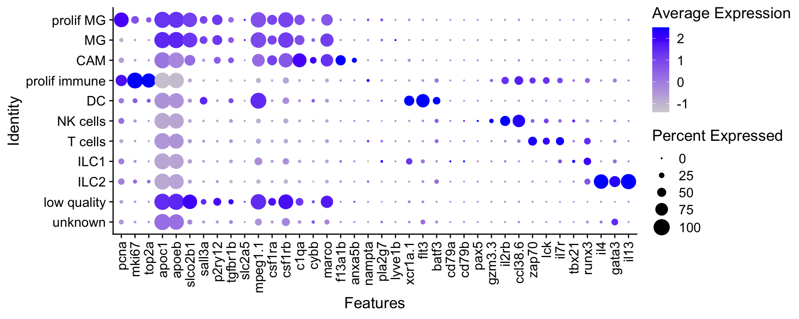
| Version | Author | Date |
|---|---|---|
| 40c8336 | Michelle Meier | 2026-06-01 |
celltype_colours <- rev(c("#544D51",
"#D3CFD4",
"#EB2C23",
"#c3d5f7",
"#3876E6",
"#D667F8",
"#36BDBA",
"#F19D36",
"#B5136D",
"beige",
"bisque1"))
names(celltype_colours) <- levels(juvenile_only$celltype)DimPlot(object = juvenile_only, group.by = "celltype", cols=celltype_colours, shuffle = T)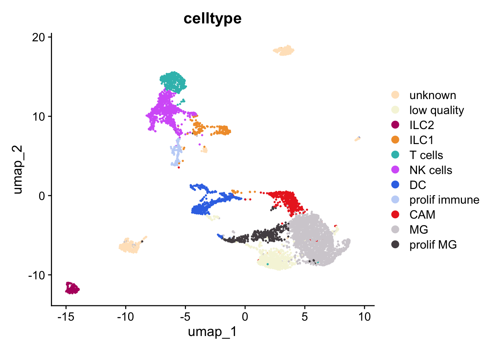
| Version | Author | Date |
|---|---|---|
| 40c8336 | Michelle Meier | 2026-06-01 |
Combine
p1 <- DotPlot(object = juvenile_only, features = genes_immune_annotation, group.by = "celltype") + rotate_xWarning: The following requested variables were not found: tgfb1p2 <- DimPlot(object = juvenile_only, group.by = "celltype", cols=celltype_colours, shuffle = T, label = T)
p2 + p1 + plot_layout(widths = c(1, 2))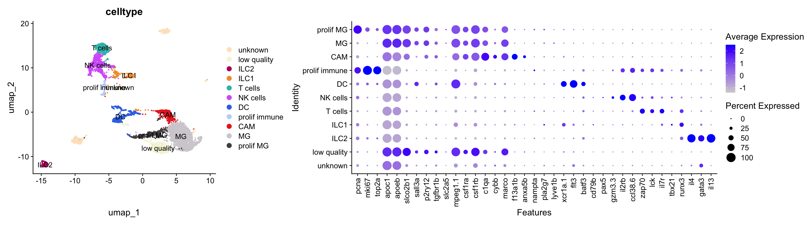
| Version | Author | Date |
|---|---|---|
| 40c8336 | Michelle Meier | 2026-06-01 |
So they seem to pick the DC (JM3) cluster as well, calling it macrophages.. They clearly express the genes used to label DC in the MA, but they do express mpeg1.1 quite highly. In the original paper, they also use ccl19a.1
FeaturePlot(object = juvenile_only, features = "ccl19a.1")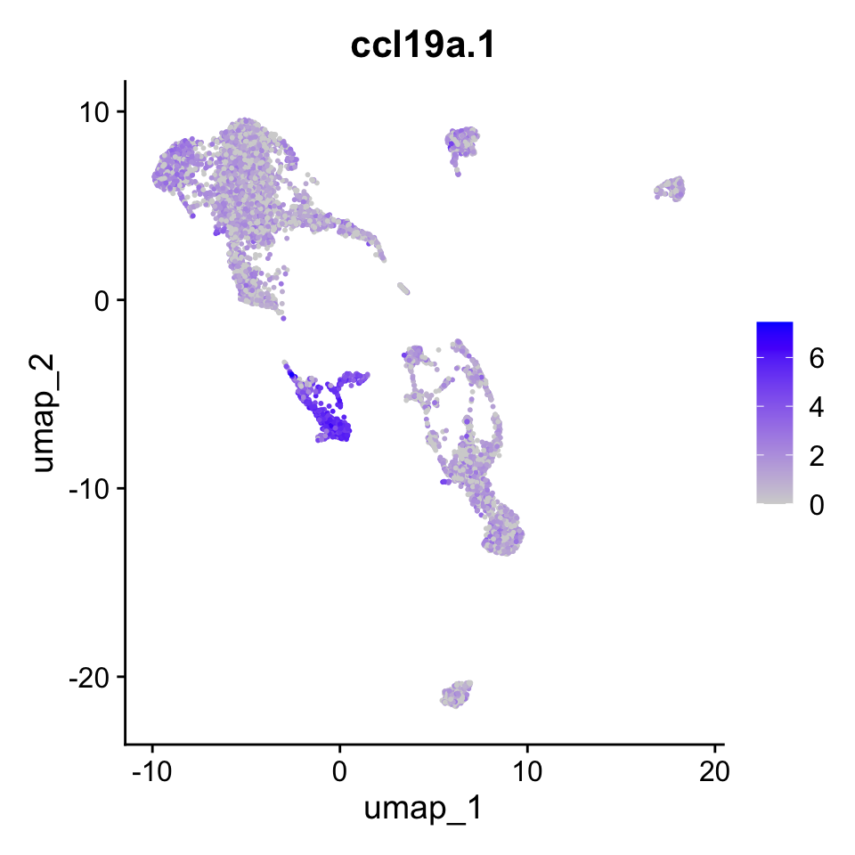
| Version | Author | Date |
|---|---|---|
| 40c8336 | Michelle Meier | 2026-06-01 |
I actually can’t find any immediate proof that that gene is a macrophage marker, everything points to DC..
This paper shows that DCs do in fact express mpeg1.1 as well. This also has adult zebrafish brain sequencing, but its only CD45+ FACS. They also have a violin plot showing that ccl19a.1 marks DC…
cells_to_keep <- juvenile_only@meta.data %>%
filter(.,celltype %in% c("CAM", "MG", "prolif MG")) %>%
rownames()
CAM_MG_only <- subset(juvenile_only, cells = cells_to_keep)
CAM_MG_only <- NormalizeData(object = CAM_MG_only, scale.factor = 10000, verbose=F) %>%
FindVariableFeatures(., nfeatures = 6000, verbose=F) %>%
ScaleData(., vars.to.regress = "nFeature_RNA", verbose=F) %>%
# ScaleData(., verbose=F) %>%
RunPCA(., verbose=F) %>%
FindNeighbors(., dims = 1:30, verbose=F) %>%
FindClusters(., resolution = seq(0.1,1,0.1), verbose=F) %>%
RunUMAP(., dims = 1:30, verbose=F)Warning: Different features in new layer data than already exists for
scale.datap1 <- DimPlot(object = CAM_MG_only, group.by = "individual", shuffle = T)
p2 <- FeaturePlot(object = CAM_MG_only, feature = "nCount_RNA")
p3 <- FeaturePlot(object = CAM_MG_only, feature = "nFeature_RNA")
p4 <- FeaturePlot(object = CAM_MG_only, feature = "f13a1b")
p5 <- DimPlot(object = CAM_MG_only, group.by = "JMclusters", shuffle = T, label = T) + theme(legend.position = "none")
p6 <- DimPlot(object = CAM_MG_only, group.by = "Jclusters", shuffle = T, label = T) + theme(legend.position = "none")
p7 <- DimPlot(object = CAM_MG_only, group.by = "celltype", shuffle = T, cols = celltype_colours)
p1+p2+p3+p4+p5+p6+p7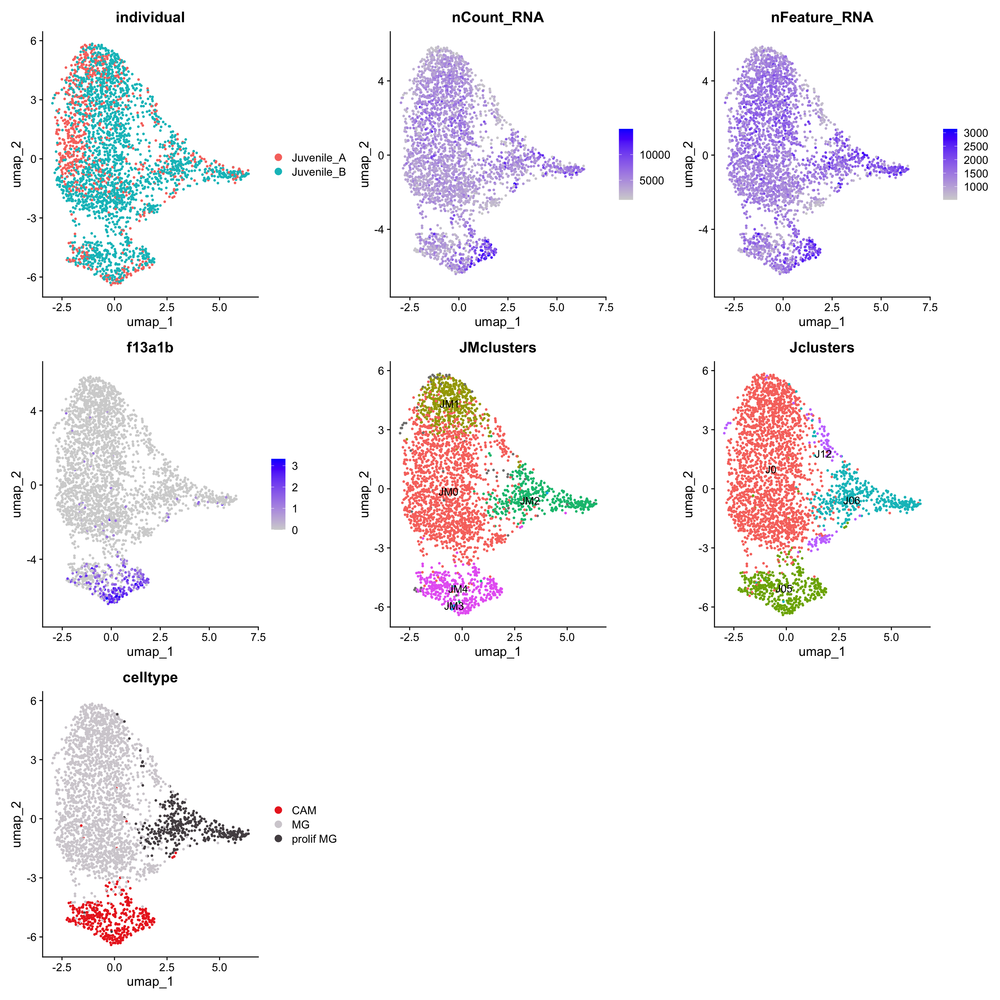
| Version | Author | Date |
|---|---|---|
| 40c8336 | Michelle Meier | 2026-06-01 |
So the paper where this data is from, they claim to discover spatially different microglia they call NAM and SAM. As we’re using their clusters, I can directly link them here..
JM1 (maps to one of our MG cluster) -> NAMs (Optic tectum genes)
JM4 (maps to our CAM cluster) -> SAMs (Hind brain genes)
They use their own bulk RNA-seq to derive region specific signatures, I’ve downloaded the data and replicated it.
The filters they used were:
adj. p < 0.05, log2 fold change >1.2, basemean >100
PercentageFeatureSet was used to determine a signature. We will add the module score as well.
bulk_signatures <- read_csv(here("data/OT_HB_genesets.csv"), show_col_types = F)
HB <- bulk_signatures %>%
filter(., baseMean > 100 & log2FoldChange > 1.2 & padj < 0.05) %>%
pull(Gene_ID)
OT <- bulk_signatures %>%
filter(., baseMean > 100 & log2FoldChange < -1.2 & padj < 0.05) %>%
pull(Gene_ID)
CAM_MG_only$percent_HB <- PercentageFeatureSet(object = CAM_MG_only, features = HB) Warning in PercentageFeatureSet(object = CAM_MG_only, features = HB): The
following features are not found in the 'RNA' assay: 'NA', 'si:ch211-14a11.5',
'dennd2b', 'si:busm1-71b9.3', 'si:cabz01069020.1', 'h2ax', 'si:dkey-242k1.4',
'si:ch211-113a14.17', 'LOC795887', 'zwi', 'ccl33.3', 'LOC100535167'CAM_MG_only <- AddModuleScore(object = CAM_MG_only,features = list(HB), name = "module_score_HB_") Warning: The following features are not present in the object: NA,
si:ch211-14a11.5, dennd2b, si:busm1-71b9.3, si:cabz01069020.1, h2ax,
si:dkey-242k1.4, si:ch211-113a14.17, LOC795887, zwi, ccl33.3, LOC100535167, not
searching for symbol synonymsCAM_MG_only$percent_OT <- PercentageFeatureSet(object = CAM_MG_only, features = OT) Warning in PercentageFeatureSet(object = CAM_MG_only, features = OT): The
following features are not found in the 'RNA' assay: 'NA', 'LOC101885164',
'LOC101884623', 'LOC100150296', 'si:ch211-157e21.2', 'mdh1ab', 'shfl'CAM_MG_only <- AddModuleScore(object = CAM_MG_only,features = list(OT), name = "module_score_OT_") Warning: The following features are not present in the object: NA,
LOC101885164, LOC101884623, LOC100150296, si:ch211-157e21.2, mdh1ab, shfl, not
searching for symbol synonymsLook at violin plots.
p1 <- CAM_MG_only@meta.data %>%
pivot_longer(., cols = c("JMclusters", "celltype"), names_to = "cluster_name", values_to = "cluster") %>%
ggplot(., aes(y = percent_OT, x = cluster, fill = cluster))+
geom_violin() +
facet_wrap(~cluster_name, scales="free") + plot_sizing+ strip_fix + ggtitle("Optic tectum signature [%]") + theme(legend.position = "none")
p2 <- CAM_MG_only@meta.data %>%
pivot_longer(., cols = c("JMclusters", "celltype"), names_to = "cluster_name", values_to = "cluster") %>%
ggplot(., aes(y = percent_HB, x = cluster, fill = cluster))+
geom_violin() +
facet_wrap(~cluster_name, scales="free") + plot_sizing+ strip_fix + ggtitle("Hindbrain signature [%]") + theme(legend.position = "none")
p1+p2 + plot_layout(ncol = 1)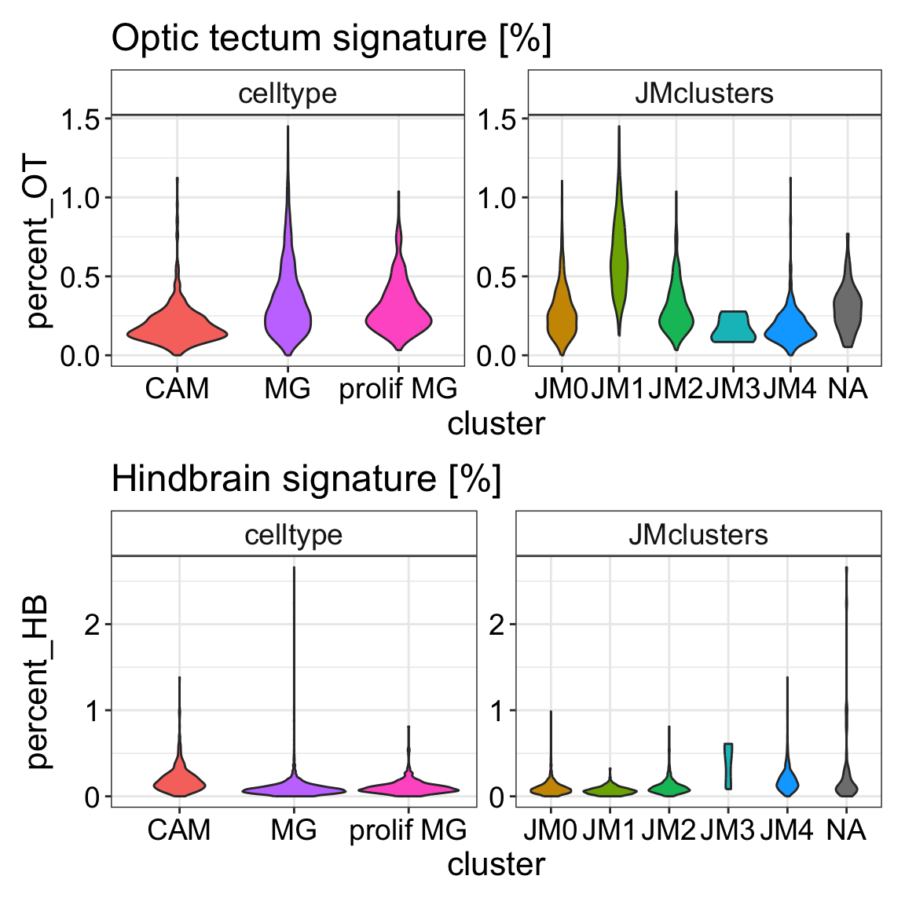
| Version | Author | Date |
|---|---|---|
| 40c8336 | Michelle Meier | 2026-06-01 |
What about the module score?
p1 <- CAM_MG_only@meta.data %>%
pivot_longer(., cols = c("JMclusters", "celltype"), names_to = "cluster_name", values_to = "cluster") %>%
ggplot(., aes(y = module_score_OT_1, x = cluster, fill = cluster))+
geom_violin() +
facet_wrap(~cluster_name, scales="free") + plot_sizing+ strip_fix + ggtitle("Optic tectum signature [enrichment]") + theme(legend.position = "none")
p2 <- CAM_MG_only@meta.data %>%
pivot_longer(., cols = c("JMclusters", "celltype"), names_to = "cluster_name", values_to = "cluster") %>%
ggplot(., aes(y = module_score_HB_1, x = cluster, fill = cluster))+
geom_violin() +
facet_wrap(~cluster_name, scales="free") + plot_sizing+ strip_fix + ggtitle("Hindbrain signature [enrichment]") + theme(legend.position = "none")
p1+p2 + plot_layout(ncol = 1)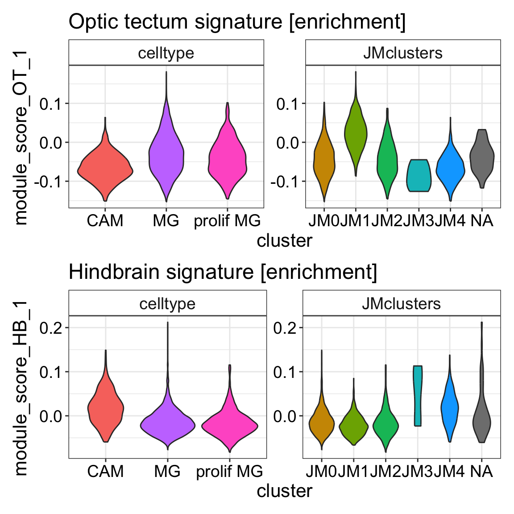
| Version | Author | Date |
|---|---|---|
| 40c8336 | Michelle Meier | 2026-06-01 |
Okay, we probably want to move away from just the JM cluster and add our own subclusters.
DimPlot(object = CAM_MG_only, group.by = "RNA_snn_res.0.2", label = T)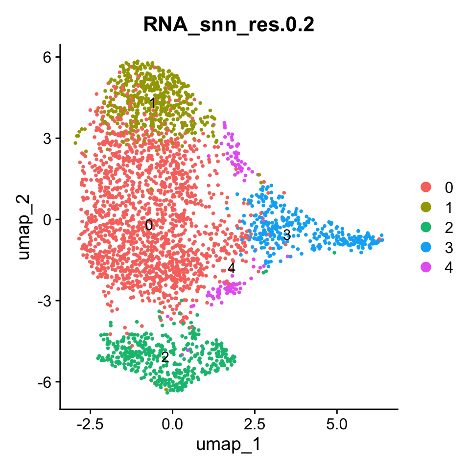
| Version | Author | Date |
|---|---|---|
| 40c8336 | Michelle Meier | 2026-06-01 |
CAM_MG_only$celltype_subclusters <- case_when(CAM_MG_only$RNA_snn_res.0.2 == 0 ~ "MG_1",
CAM_MG_only$RNA_snn_res.0.2 == 1 ~ "MG_2",
CAM_MG_only$RNA_snn_res.0.2 == 2 ~ "CAM",
CAM_MG_only$RNA_snn_res.0.2 == 3 ~ "prolif MG",
CAM_MG_only$RNA_snn_res.0.2 == 4 ~ "MG_3",)
colours_celltype_subclusters <- c("#EB2C23", "#544D51", "grey90", "grey70", "grey45")
names(colours_celltype_subclusters) <- c("CAM", "prolif MG", "MG_1", "MG_2", "MG_3")Make boxplots instead
CAM_MG_only@meta.data %>%
pivot_longer(., cols = c("module_score_OT_1", "module_score_HB_1"), names_to = "score_name", values_to = "score") %>%
ggplot(., aes(y = score, x = celltype_subclusters, fill = celltype_subclusters))+
geom_boxplot(outlier.size = 0.5) +
geom_jitter( size=0.01, alpha=0.3)+
geom_hline(yintercept = 0, linewidth=0.8)+
scale_fill_manual(values = colours_celltype_subclusters) +
facet_wrap(~score_name, scales="free_y", ncol=1) + plot_sizing+ strip_fix + theme(legend.position = "none") + xlab("")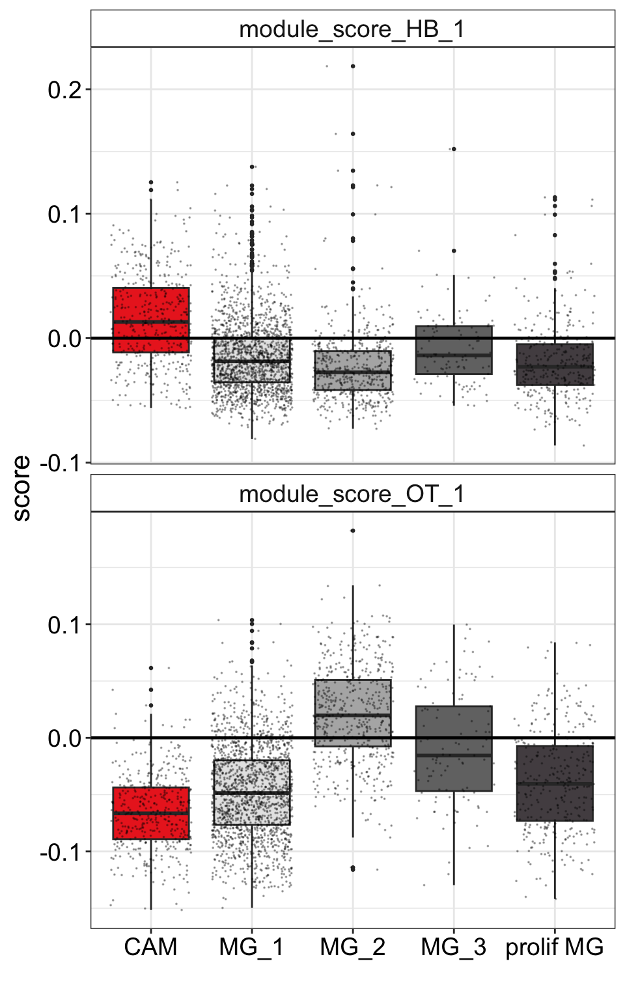
| Version | Author | Date |
|---|---|---|
| 40c8336 | Michelle Meier | 2026-06-01 |
filename <- here("output/data/seurat_objects/Silva2021_28dpf_AllImmuneCells_juvenile.qs2")
qs_save(object = juvenile_only, file = filename)
filename <- here("output/data/seurat_objects/Silva2021_28dpf_CAM_MGonly_juvenile.qs2")
qs_save(object = CAM_MG_only, file = filename)
sessionInfo()R version 4.5.0 (2025-04-11)
Platform: aarch64-apple-darwin20
Running under: macOS Sequoia 15.7.4
Matrix products: default
BLAS: /Library/Frameworks/R.framework/Versions/4.5-arm64/Resources/lib/libRblas.0.dylib
LAPACK: /Library/Frameworks/R.framework/Versions/4.5-arm64/Resources/lib/libRlapack.dylib; LAPACK version 3.12.1
locale:
[1] en_US.UTF-8/en_US.UTF-8/en_US.UTF-8/C/en_US.UTF-8/en_US.UTF-8
time zone: Australia/Melbourne
tzcode source: internal
attached base packages:
[1] stats4 stats graphics grDevices datasets utils methods
[8] base
other attached packages:
[1] future_1.70.0 patchwork_1.3.2
[3] qs2_0.1.7 lubridate_1.9.5
[5] forcats_1.0.1 stringr_1.5.1
[7] dplyr_1.2.1 purrr_1.2.2
[9] tidyr_1.3.2 tibble_3.3.1
[11] tidyverse_2.0.0 ggpubr_0.6.3
[13] Seurat_5.4.0 SeuratObject_5.4.0
[15] sp_2.2-1 readr_2.2.0
[17] scales_1.4.0 scater_1.38.1
[19] ggplot2_4.0.2 scran_1.38.1
[21] scuttle_1.20.0 SingleCellExperiment_1.32.0
[23] SummarizedExperiment_1.40.0 Biobase_2.70.0
[25] GenomicRanges_1.62.1 Seqinfo_1.0.0
[27] IRanges_2.44.0 S4Vectors_0.48.1
[29] BiocGenerics_0.56.0 generics_0.1.4
[31] MatrixGenerics_1.22.0 matrixStats_1.5.0
[33] here_1.0.2 workflowr_1.7.1
loaded via a namespace (and not attached):
[1] RcppAnnoy_0.0.23 splines_4.5.0 later_1.4.2
[4] polyclip_1.10-7 fastDummies_1.7.5 lifecycle_1.0.5
[7] rstatix_0.7.3 edgeR_4.8.2 rprojroot_2.1.1
[10] vroom_1.7.1 globals_0.19.1 processx_3.8.6
[13] lattice_0.22-6 MASS_7.3-65 backports_1.5.1
[16] magrittr_2.0.3 limma_3.66.0 plotly_4.12.0
[19] sass_0.4.10 rmarkdown_2.29 jquerylib_0.1.4
[22] yaml_2.3.10 metapod_1.18.0 httpuv_1.6.16
[25] otel_0.2.0 sctransform_0.4.3 spam_2.11-3
[28] spatstat.sparse_3.1-0 reticulate_1.46.0 cowplot_1.2.0
[31] pbapply_1.7-4 RColorBrewer_1.1-3 abind_1.4-8
[34] Rtsne_0.17 git2r_0.36.2 ggrepel_0.9.8
[37] irlba_2.3.7 spatstat.utils_3.2-2 listenv_0.10.1
[40] goftest_1.2-3 RSpectra_0.16-2 spatstat.random_3.4-5
[43] dqrng_0.4.1 fitdistrplus_1.2-6 parallelly_1.47.0
[46] codetools_0.2-20 DelayedArray_0.36.1 tidyselect_1.2.1
[49] farver_2.1.2 ScaledMatrix_1.18.0 viridis_0.6.5
[52] spatstat.explore_3.8-0 jsonlite_2.0.0 BiocNeighbors_2.4.0
[55] Formula_1.2-5 progressr_0.19.0 ggridges_0.5.7
[58] survival_3.8-3 tools_4.5.0 ica_1.0-3
[61] Rcpp_1.0.14 glue_1.8.0 gridExtra_2.3
[64] SparseArray_1.10.10 mgcv_1.9-1 xfun_0.52
[67] withr_3.0.2 BiocManager_1.30.27 fastmap_1.2.0
[70] bluster_1.20.0 callr_3.7.6 digest_0.6.37
[73] rsvd_1.0.5 timechange_0.4.0 R6_2.6.1
[76] mime_0.13 scattermore_1.2 tensor_1.5.1
[79] spatstat.data_3.1-9 renv_1.1.4 data.table_1.18.2.1
[82] httr_1.4.7 htmlwidgets_1.6.4 S4Arrays_1.10.1
[85] whisker_0.4.1 uwot_0.2.4 pkgconfig_2.0.3
[88] gtable_0.3.6 lmtest_0.9-40 S7_0.2.1-1
[91] XVector_0.50.0 htmltools_0.5.8.1 carData_3.0-6
[94] dotCall64_1.2 png_0.1-9 spatstat.univar_3.1-7
[97] knitr_1.50 rstudioapi_0.17.1 tzdb_0.5.0
[100] reshape2_1.4.5 nlme_3.1-168 cachem_1.1.0
[103] zoo_1.8-15 KernSmooth_2.23-26 parallel_4.5.0
[106] miniUI_0.1.2 vipor_0.4.7 pillar_1.11.1
[109] grid_4.5.0 vctrs_0.7.3 RANN_2.6.2
[112] promises_1.5.0 stringfish_0.18.0 car_3.1-5
[115] BiocSingular_1.26.1 beachmat_2.26.0 xtable_1.8-8
[118] cluster_2.1.8.1 beeswarm_0.4.0 evaluate_1.0.3
[121] cli_3.6.5 locfit_1.5-9.12 compiler_4.5.0
[124] crayon_1.5.3 rlang_1.2.0 ggsignif_0.6.4
[127] future.apply_1.20.2 labeling_0.4.3 ps_1.9.1
[130] getPass_0.2-4 plyr_1.8.9 fs_1.6.6
[133] ggbeeswarm_0.7.3 stringi_1.8.7 deldir_2.0-4
[136] viridisLite_0.4.3 BiocParallel_1.44.0 lazyeval_0.2.3
[139] spatstat.geom_3.7-3 Matrix_1.7-3 RcppHNSW_0.6.0
[142] hms_1.1.4 bit64_4.6.0-1 statmod_1.5.1
[145] shiny_1.13.0 ROCR_1.0-12 broom_1.0.12
[148] igraph_2.2.3 RcppParallel_5.1.11-2 bslib_0.9.0
[151] bit_4.6.0